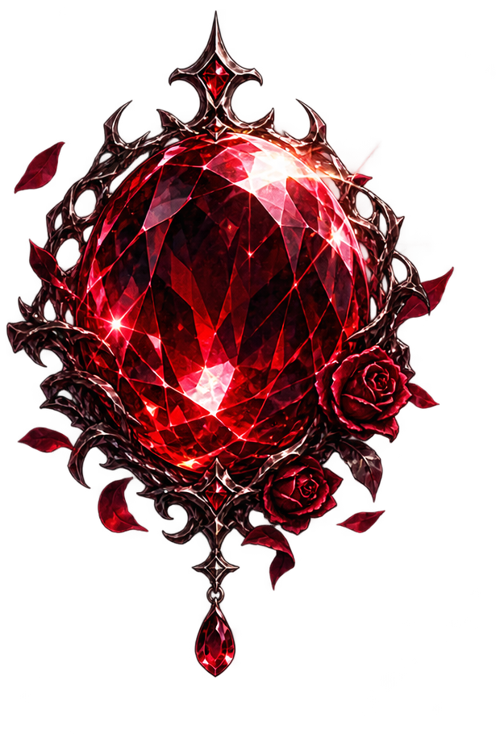
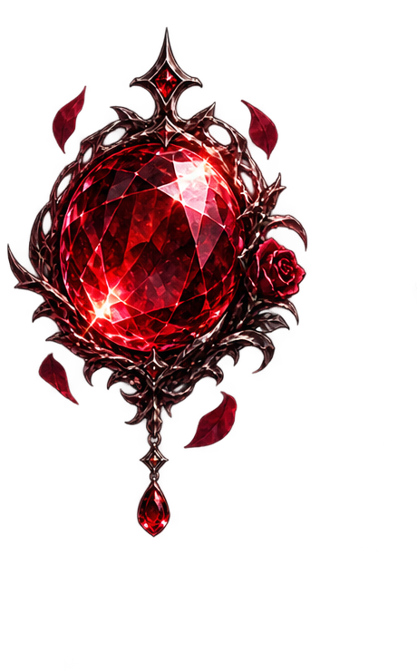
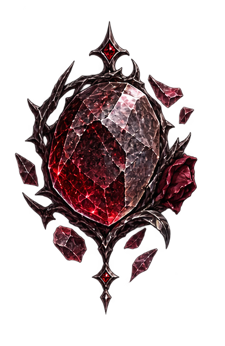

締切と、作業後に残すひとことだけで、次に向き合う案件を見つける。
1案件の中に複数の制作物を登録できます。制作物ごとの作業ステップも自由に決められます。
作業後、必要なら選んだステップを完了にできます。そのうえで今日の手触りを一つだけ選んでください。



案件情報に加えて、制作物と作業ステップも自由に変更できます。完了済みのステップ状態は、名前を変えても引き継がれます。
一度つなげると、PCで加えた案件や記録が、スマホを開いたときにもそのまま見られます。
この2つは、保存先を作ったあとに表示されます。まだの場合は「Supabase同期設定」を見てください。
PCとスマホで同じものを使ってください。
● 同期できていますここで加えた内容は、ほかの端末にも反映されます。